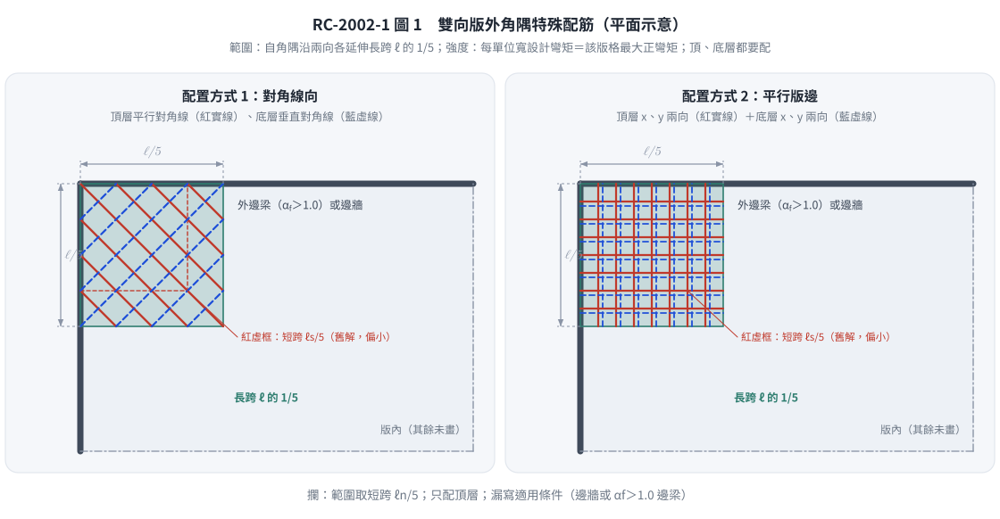

📄 題目正本：考卷原文・附圖・判讀清單（已確認）
RC-2002-1 題目正本
本檔只記錄考卷上寫了什麼、圖上畫了什麼，不含任何解法。解析見同資料夾
RC-2002-1.md。
判讀清單已經確認（凍結）；本檔原則上不再修改（改動須回考卷原圖並記 log）。
| 項目 | 內容 |
|---|---|
| 考卷 | raw/exams/RC-2002_鋼筋混凝土設計與預力.pdf 第 1 頁（正面），第一題 |
| 考年 | 民國 91 年（2002） |
| 配分 | 10 分 |
| 附圖 | 無（純文字題） |
| 判讀狀態 | 已確認（2026-11-15 使用者授權依 Claude 建議確認；轉錄 2026-11-15；PyMuPDF 110 dpi 全頁目視；文字以 PDF 文字層核對；盲讀後才比對既有解析） |
1. 考卷原文（逐字）
一、四週有邊梁的 RC 雙向樓版，其角隅處在配筋上應作何特殊考慮？試繪圖說明之。（10 分）
2. 考卷給的公式、附表與參數
- 純文字題，無數值、無附圖；要求考生「繪圖說明」。
- 沒有給：版的尺寸、邊梁勁度（$\alpha$ 值）、版厚。
- 卷首注意事項：㈠可以使用電子計算器，使用電子計算器計算之試題，需詳列解答過程。㈡不必抄題，作答時請將試題題號及答案依照順序寫在試卷上，於本試題上作答者，不予計分。
3. 附圖
本題考卷沒有附圖。
4. 判讀清單
「把握」標不確定者優先列；解讀類項目（題目用字的意思）另標「解讀」。標「依 Claude 建議確認」者，為使用者 2026-11-15 授權「要我確認的請依你建議」後定案。
| # | 項目 | 判讀 | 圖上／題文依據 | 把握 |
|---|---|---|---|---|
| 1 | 題型 | 概念題，須以圖說明外角隅（兩邊不連續處）的特殊配筋 | 題文「試繪圖說明之」 | 確定 |
| 2 | 「四週有邊梁」 | 版四邊皆由梁支承（邊梁），角隅受梁約束而有翹起傾向 | 題文 | 確定（解讀） |
| 3 | 「角隅」 | 指外角隅（兩邊皆為不連續邊的版角） | 題文「其角隅處」配合「邊梁」 | 確定（解讀） |
| 4 | 考卷沒有給 | 版尺寸、邊梁勁度、版厚——不需數值計算 | 全題 | 確定 |
轉錄：2026-11-15（RC-U3-1／U3-2 題目正本推廣・批 1）
確認：2026-11-15 使用者授權依 Claude 建議確認（RC-U3-1／U3-2 題目正本推廣・批 1，關卡一）
考題編號：RC-2002-1
主分類： RC-U3-2 樓版與基腳設計
副分類： 無
設計法： 概念題
標籤： 雙向版 角隅配筋 邊梁 扭矩效應 角部特殊配筋 繪圖說明 現行規範8.7.3 αf>1.0 長跨1/5
1. 題目（考卷原文見題目正本）
考卷原文、公式／附表、附圖與判讀清單（已確認）見
RC-2002-1-problem.md。本節只列解題時最容易讀錯的地方與本解使用的記號；題意以題目正本為準。
常見誤讀
| 項目 | 正確判讀 | 常見誤讀 |
|---|---|---|
| 角隅 | 兩邊不連續的外角隅（由邊梁支承） | 所有版角一律 |
| 所求 | 說明並繪圖：角隅特殊配筋的範圍、方向與上下層 | 只寫文字 |
| 規範版本 | 依現行規範條文說明（8.7.3，舊 ACI 13.3.6 內容相同） | 沿用舊版 ACI 條號 |
| 延伸範圍 | 自角隅沿兩向各延伸長跨的 1/5 | 取較短跨度淨跨的 1/5（本庫舊解） |
| 適用條件 | 外角隅由邊牆或 $\alpha_f>1.0$ 的邊梁支承時 | 未提 $\alpha_f$；稱牆支承時不適用（本庫舊解） |
本解記號： $\ell$＝角隅所在版格的長向跨度（特殊配筋範圍 $\ell/5$）；$\alpha_f$＝邊梁與版的撓曲勁度比 $E_{cb}I_b/(E_{cs}I_s)$。
2. 考題核心精神與出題者意圖 (Core Concepts & Examiner's Intent)
核心觀念：
雙向版在均佈載重作用下，版面趨向形成「碟形」（dish shape）向下撓曲。四邊有梁支撐時，梁會抵抗版邊的撓曲，但角隅因兩方向梁的交匯，若梁無法完全阻止，版角隅在版面上的投影呈「翹起」趨勢（corner lifting）。此翹起趨勢會在角隅版面產生：
- 對角線方向（45°） 的負彎矩：版角翹起 → 對角線方向上緣受拉
- 垂直對角線方向（135°） 的正彎矩：版角翹起 → 上述垂直方向下緣受拉
這兩組彎矩的存在，使角隅版面同時在上下緣都需要配置鋼筋，形成「角隅特殊配筋」的要求。
出題者意圖：
- 測驗考生是否理解雙向版角隅「翹起效應」的力學機理
- 測驗是否知道需在角隅同時配置上層與下層鋼筋
- 測驗鋼筋布置範圍（長跨 $\ell/5$）、適用條件（邊牆或 $\alpha_f>1.0$ 邊梁）與數量的規範規定
- 有繪圖說明要求，需要具體展示配筋細部
3. 解題戰略地圖與陷阱分析 (Strategic Roadmap & Trap Analysis)
作戰計畫：
- 說明角隅翹起效應的力學原因（2–3 句）
- 說明角隅彎矩方向（對角線方向的負彎矩 + 垂直方向的正彎矩）
- 列出現行規範 8.7.3 的角隅配筋要求（適用條件、強度、範圍、配置方式）
- 繪製角隅配筋示意圖
關鍵陷阱：
| # | 陷阱 | 應對 |
|---|---|---|
| ① | 只說「上層加筋」，忘記下層也需要配置 | 角隅翹起同時產生上下緣拉力，上下層都需配筋 |
| ② | 範圍不寫清楚 | 規範要求自角隅各方向延伸長跨 $\ell$ 的 1/5 |
| ③ | 適用條件不寫 | 外角隅由邊牆或 $\alpha_f>1.0$ 之邊梁支承時才需要 |
| ④ | 配筋量不提 | 數量 = 版面最大正彎矩處鋼筋量（即等量要求） |
| ⑤ | 只畫一個方向 | 兩種配置擇一：頂層平行對角線＋底層垂直對角線，或頂、底層各配 x、y 兩向平行版邊的鋼筋 |
3.5 變數層次分析 (Variable Hierarchy Analysis)
複習提示：第一次解題後，在每個卡住的知識點旁標記
⚠；第二次複習時只看有⚠的項目。
最終目標
說明雙向版角隅配筋的力學原因、配筋方式、範圍與數量，並繪圖表示。
本題關鍵公式（依說明順序）
$$\text{Step 1：角隅扭矩效應} \quad M_{corner} \neq 0 \Rightarrow \text{需要特殊配筋}$$
$$\text{Step 2：配筋延伸範圍} \quad L_{reinf} = \frac{\ell_{長跨}}{5}\quad(\text{邊牆或 }\alpha_f>1.0\text{ 邊梁})$$
$$\text{Step 3：配筋量} \quad A_{s,corner} = A_{s,max+}$$
L1：題目直接給定
| 符號 | 數值 | 說明 |
|---|---|---|
| 版型 | 雙向版 | Two-way slab |
| 支撐 | 四週有邊梁 | beams on all four sides |
L2：需知識點推導
角隅力學行為
| 符號 | 公式／來源 | 卡關? |
|---|---|---|
| 翹起趨勢 | 均佈載重使版趨向碟形；角隅因兩方向梁支撐而產生扭矩與翹起傾向 | |
| $M_{diag}^{-}$ | 對角線方向（45°）上緣受拉 → 需上層配筋 | |
| $M_{anti}^{+}$ | 垂直對角線方向（135°）下緣受拉 → 需下層配筋 |
規範配筋要求（現行規範 8.7.3；舊 ACI 318 §13.3.6 相同）
| 符號 | 公式／來源 | 卡關? |
|---|---|---|
| 適用條件 | 外角隅由邊牆支承，或至少一根邊梁 $\alpha_f>1.0$ | |
| 配置方式 ① | 版頂：平行對角線；版底：垂直對角線 | |
| 配置方式 ② | 版頂、版底各配兩層平行版邊（x、y）的鋼筋 | |
| 延伸範圍 | 自角隅沿兩向各延伸長跨 $\ell$ 的 1/5 | |
| 數量 | 每單位寬設計彎矩＝該版格每單位寬最大正彎矩 |
L3：深層知識（不懂就卡住）
| 知識點 | 說明 | 卡關? |
|---|---|---|
| 角隅翹起效應 | 雙向版在版角無束制時，扭矩效應使版角上翹；四邊梁會施加向下的扭矩，但仍需配特殊筋以免開裂 | |
| 8.7.3 適用條件 | 外角隅由邊牆或 $\alpha_f>1.0$ 的邊梁支承時才需要；支承愈剛，角隅被壓住而產生的扭矩愈大。版角無支承（自由角）或邊梁很柔時不適用 | |
| 兩種配置取向 | 頂層平行對角線＋底層垂直對角線，或頂、底各兩向平行版邊；兩者均符合規範，平行版邊較易施工 | |
| 配筋量依最大正彎矩 | 數量取版面跨中最大正彎矩對應的鋼筋面積，不可任意減少 |
4. 步驟化詳細計算過程 (Step-by-Step Detailed Calculation)
Step 1：角隅翹起效應說明
均佈載重下，雙向版趨向向下撓曲呈碟形。四邊若設有梁支撐，梁提供線支撐力，但版角隅無直接向下的支撐反力。分析可知，四邊梁以扭矩（扭轉反力）來維持版角的位置，若無此扭矩（例如角落沒有束制），版角會上翹。
當四週均有梁（即角隅上方有梁的束制），版角雖無法自由上翹，但在版角附近仍存在二維彎矩場：
- 沿對角線 45° 方向：負彎矩（上緣受拉，下緣受壓）
- 垂直對角線方向：正彎矩（下緣受拉，上緣受壓）
$$M_{45°}^{-} \text{（上緣拉力）} \qquad M_{135°}^{+} \text{（下緣拉力）}$$
因此，角隅版面同時需要上層與下層鋼筋。
Step 2：規範規定（現行規範 8.7.3；舊 ACI 318 §13.3.6 相同）
(a) 適用條件：
版的外角隅由邊牆支承，或至少一根邊梁的 $\alpha_f>1.0$（$\alpha_f=E_{cb}I_b/E_{cs}I_s$）。題目「四週有邊梁」，邊梁勁度一般滿足 $\alpha_f>1.0$，故須配角隅筋。
(b) 強度：
版頂與版底的角隅筋，各以「該版格每單位寬最大正彎矩」為每單位寬設計彎矩：
$$M_{corner}=M_{\max}^{+}\ (\text{每單位寬}),\qquad A_{s,corner} = A_{s,\max+}$$
- 版頂：彎矩繞垂直於對角線之軸（負彎矩，頂面沿對角線方向受拉）
- 版底：彎矩繞平行於對角線之軸（正彎矩，底面垂直對角線方向受拉）
(c) 延伸範圍：
自角隅沿兩個方向各延伸長跨的 1/5：
$$\boxed{L = \frac{\ell_{長跨}}{5}}$$
(d) 配置方式（擇一）：
- 版頂鋼筋平行對角線、版底鋼筋垂直對角線；
- 版頂、版底各配兩層平行版邊（x、y 兩向）的鋼筋。
Step 3：角隅配筋示意圖說明

圖 1 外角隅特殊配筋的範圍與兩種配置方式（考卷要求繪圖）。攔：範圍取短跨 $\ell_n/5$（偏小）；只配頂層；漏寫適用條件（邊牆或 $\alpha_f>1.0$ 邊梁）。
平面（外角隅，$\ell/5\times\ell/5$ 方形區）——配置方式 1：
版邊（邊梁）
┌──────────────────────────────
│╲ ╲ ╲ ╲ ╲│ 頂層：平行對角線（╲）
│ ╲ ╲ ╲ ╲ │ 底層：垂直對角線（╱）
│╱ ╱ ╱ ╱ ╱│
│ ╱ ╱ ╱ ╱ │ ← ℓ/5 →
├─────────┘
│ ↑ ℓ/5 版內（一般配筋）
│ 版邊（邊梁）
平面——配置方式 2（兩向平行版邊，頂、底各兩層）：
┌──────────────
│┼┼┼┼┼┼│ 頂層 x＋y、底層 x＋y
│┼┼┼┼┼┼│ 範圍 ℓ/5 × ℓ/5
│┼┼┼┼┼┼│
├──────┘
斷面（角隅區，配置方式 2）：
═══════════════════════ 版頂面
─ ─ ─ ─ ─ ─ ─ ─ ─ ─ 頂層角隅筋（x 向）
─ ─ ─ ─ ─ ─ ─ ─ ─ ─ 頂層角隅筋（y 向）
版心
─ ─ ─ ─ ─ ─ ─ ─ ─ ─ 底層筋（y 向）
─ ─ ─ ─ ─ ─ ─ ─ ─ ─ 底層筋（x 向）
═══════════════════════ 版底面
裂縫型式（未配角隅筋時）： 版頂出現垂直對角線的裂縫（頂面沿對角線受拉）；版底出現平行對角線的裂縫。
結論：
四週有邊梁（$\alpha_f>1.0$）或邊牆支承之雙向版，外角隅受約束不能上翹，在版頂沿對角線方向、版底垂直對角線方向產生拉力。應在角隅自兩向各延伸長跨 $\ell/5$ 的範圍內，於版頂與版底配置角隅筋（頂層平行對角線、底層垂直對角線，或頂、底各兩向平行版邊），其每單位寬強度等於該版格最大正彎矩所需鋼筋。
$$\boxed{L_{延伸} = \frac{\ell_{長跨}}{5},\quad A_{s,corner} = A_{s,\max+},\quad \text{版頂與版底都配}}$$
5. 關鍵爭議點與進階探討 (Critical Issues & Advanced Discussion)
1. 邊梁「完全束制」vs「部分束制」：
若版角上方有梁，但梁的抗扭勁度很低，則版角仍會有部分翹起，此時角隅配筋更顯重要。規範以 $\alpha_f>1.0$ 作為門檻：邊梁夠剛才會把角隅壓住而產生大扭矩；邊梁很柔（$\alpha_f\le1.0$）時角隅可微翹、扭矩小，不強制角隅筋。
2. 可否用 45° 斜向配筋？
規範允許採用平行版邊（x/y 方向）配筋或 45°/135° 對角線配筋。
- 45° 對角線配筋：理論上直接對應彎矩方向，鋼筋效率最高
- 平行版邊配筋：施工方便，為實務中常用做法
兩者均符合規範，考場上以「平行版邊 + 說明」最為完整安全。
3. 角隅特殊配筋範圍是否含頂層普通筋？
角隅配筋為附加配筋，置於一般版筋之上（或合併設計時需確認），不可以一般版筋替代角隅特殊筋的要求。
4. 支承型式與適用範圍：
邊牆支承的外角隅同樣適用（條文明列「邊牆」）；版角無支承（自由角，如懸挑版角）或邊梁 $\alpha_f\le1.0$ 時不適用。內角隅（兩邊連續）不需角隅筋。
修正日期：2026-11-15（§1 改為指向題目正本；舊 §1 重述改寫為常見誤讀與本解記號；本行非答案勘誤）
修正日期：2026-11-15（FIX-RC-U3-B1 解析勘誤（觀念），改依現行台灣規範（建築物混凝土結構設計規範 2023）8.7.3：延伸範圍由「較短跨度淨跨 $\ell_n/5$」改為長跨 $\ell/5$；補適用條件「邊牆或 $\alpha_f>1.0$ 邊梁」；更正 §5「牆支承時不適用」；配置方式改列兩種（頂平行對角線／底垂直對角線，或頂底各兩向平行版邊）；示意圖重畫。驗證：逐條對照規範條文與盲解紀錄要點）
修正日期：2026-11-15（RECHECK-RC-U3-B1 落實檢查輕微殘留修正，非勘誤、答案不變：§3 作戰計畫「ACI 318 規範規定」改「現行規範 8.7.3」；陷阱表編號依序、⑤ 改列兩種配置方式（原只寫 x、y 兩向）)
圖解補繪：2026-11-15（DIAG-RC-U3-B1，向量圖，腳本 figs/gen_RC-2002-1.py，可重跑；非勘誤、答案不變）